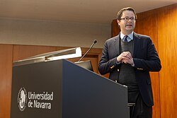

Tyler J. VanderWeele | |
|---|---|
 | |
| Born | |
| Alma mater | St John's College, Oxford Wharton School of the University of Pennsylvania Harvard University |
| Known for | Causal inference Religion and health |
| Awards | Mortimer Spiegelman Award (2014) COPSS Presidents' Award (2017) |
| Scientific career | |
| Fields | Epidemiology |
| Institutions | University of Chicago Harvard T.H. Chan School of Public Health |
| Thesis | Contributions to the Theory of Causal Directed Acyclic Graphs (2006) |
| James Robins | |
Tyler John VanderWeele is an American academic who serves as the John L. Loeb and Frances Lehman Loeb Professor of Epidemiology at the Harvard T.H. Chan School of Public Health. He is also the co-director of Harvard University's Initiative on Health, Religion and Spirituality and director of the Human Flourishing Program at the Institute for Quantitative Social Science.
VanderWeele was born in Chicago, Illinois, and raised in San Jose, Costa Rica, Bulgaria and Austria. He obtained a BA in mathematics and a BA in philosophy and theology from the University of Oxford in 2000. He received an MA in finance from the Wharton School at the University of Pennsylvania in 2002. He went on to study at Harvard University and obtained a PhD in biostatistics under the supervision of James Robins in 2006. VanderWeele was an assistant professor at the Department of Health Studies at University of Chicago from 2006 to 2009. He joined Harvard University as an associate professor at the Departments of Epidemiology and Biostatistics in 2009 and became a professor there in 2013. In 2018, he was named the John L. Loeb and Frances Lehman Loeb Professor of Epidemiology at Harvard University.[1]
VanderWeele's research has focused on causal inference in epidemiology, the study of happiness and human flourishing, as well as the relationship between religion and health.[2][3][4] He is author of the book Measuring Well-Being.[5][6][7] He has defined flourishing as a "state in which all aspects of a person's life are good."[8][9]
VanderWeele is project co-director of the Global Flourishing Study, a $43.4 million study in collaboration with researchers at Harvard University, Baylor University, Gallup, and the Center for Open Science, with over 200,000 participants in 22 countries from six continents with five waves of annual data collection on the factors that influence human flourishing.[10] The flagship paper from the Global Flourishing Study presents initial findings from the first wave of data collection and outlines the study’s longitudinal design, measurement framework, and analytic approach. Published in Nature Mental Health, the paper reports substantial cross-national variation in flourishing across domains such as meaning, relationships, character, and health, and highlights age-related and religious participation patterns observed across countries.[11] The study is designed to generate open-access data to support causal inference on the determinants of human flourishing worldwide.
VanderWeele also conducts research focused on theory and methods for distinguishing between association and causation in the biomedical and social sciences.[12] His contributions to causal inference include introducing the E-value as a quantitative measure for sensitivity analysis [13] and advances in mediation analysis [14] along with the book, Explanation in Causal Inference, on the topic.[15]
His work on causal inference is grounded in the potential outcomes framework, which is a popular approach, but not embraced by everyone.[16][17][18] He is also an author of the book Modern Epidemiology, described as "the standard textbook in all academic institutions for a long time to come… as a reference and encyclopedia."[19] VanderWeele has published studies on religious service attendance and its relation to lowering mortality, depression, suicide, divorce, and improving many other outcomes.[20][21][22][23][24]
VanderWeele is recipient of the Mortimer Spiegelman Award from the American Public Health Association (2014); the John Snow Award from the American Public Health Association (2017);[25] and the Presidents' Award from the Committee of Presidents of Statistical Societies (COPSS) (2017) for "fundamental contributions to causal inference and the understanding of causal mechanisms; for profound advancement of epidemiologic theory and methods and the application of statistics throughout medical and social sciences; and for excellent service to the profession including exceptional contributions to teaching, mentoring, and bridging many academic disciplines with statistics."[26]
He was elected a Fellow of the American Statistical Association in 2014, the American Academy of Catholic Scholars and Artists (2021),[27] the International Society for Science and Religion (2021), and the International Positive Psychology Association (2021).[28] He served as the George Eastman Visiting Professor at Balliol College, University of Oxford, during the 2019-2020 academic year. In 2020, he received an honorary doctorate from the Catholic University of America for "ongoing efforts to serve vulnerable populations and develop a fuller understanding of the factors that contribute to human flourishing."[29]
VanderWeele's research on well-being and on religion has been covered by the New York Times,[30] USA Today,[31] Washington Post,[32] Chicago Tribune,[33] TIME Magazine,[34] The Economist,[35] CBS,[36] and CNN.[37] He has frequently contributed to Psychology Today on topics concerning human flourishing.
VanderWeele was instrumental in establishing the Flourishing Network, which, through the Human Flourishing Program, serves over 200 community leaders, educators, scholars, business executives, entrepreneurs, and medical professionals in translating research on flourishing into best practices for the promotion of human well-being.[38]
VanderWeele has expressed strong support for academic freedom of expression,[39] and has published work on intellectual and viewpoint diversity.[40] He is a member of the Academic Freedom Alliance, the Heterodox Academy,[41] and Harvard's Council on Academic Freedom.
He is a regular contributor to the Institute for Family Studies.[42] In 2015, VanderWeele was one of 47 scholars who filed an amicus brief in support of respondents and affirmance in the case of Obergefell v. Hodges, 576 U.S. 644 (2015).[43] His amici curiae argued that there is no constitutional right to same-sex marriage, concluding: "State decisions reflecting the views of citizens about a matter as fundamental as the definition of marriage… must be left free to reconcile moral claims and interests rather than being compelled to accept the federal courts' settlement of such delicate considerations."[44] VanderWeele published an article in Global Epidemiology describing his "experiences and their relation to questions of academic freedom, population health promotion, and efforts at working together across differing moral systems."[45]
He has been an advocate for addressing issues of healing and prevention from childhood sexual abuse within the Catholic Church and in other religious and secular organizations. This work has included the organization of an International Symposium on this topic,[46] and efforts to establish a United Nations World Day for the Prevention of and Healing from Child Sexual Exploitation, Abuse, and Violence.[47] VanderWeele is a frequent speaker at academic, community, and religious organizations, and has delivered keynote addresses at scientific conferences in the United States, Australia, Europe, Asia, and South America.
In 2026, VanderWeele was named as a member of the Pontifical Academy of Social Sciences by Pope Leo XIV.[48][49]
{{cite journal}}: CS1 maint: multiple names: authors list (link)
{kind=link}
{kind=link}